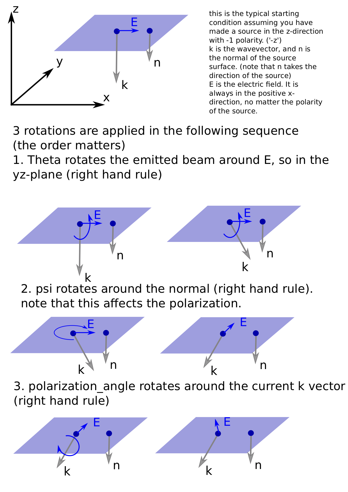

Example: Grating Coupler Optimization#
Quick start guide#
Running grating optimization#
To run the example grating coupler optimization, execute the following:
python3 grating.py run save-folder-name
The example provided has the following parameters
Material stack parameters:
Oxide cladding
220 nm silicon
2 um buried-oxide (BOX) layer
Silicon substrate
Grating parameters:
Grating length = 12 um
Partial etch depth = 0.5 (1 would be fully etched)
Source parameters:
1550 nm
10.4 um mode-field-diameter
10 degrees angle of incidence
Simulation/optimization parameters:
Grid discretization = 40 nm
Number of PML layers = 10
Minimum feature size = 100 nm
60 iterations of continuous optimization
200 iterations of discrete optimization
View results#
To generate the results, run the following:
python3 grating.py view save-folder-name
To get text-only output , run view_quick instead:
python3 grating.py view_quick save-folder-name
Generate GDS#
A GDS file (named grating.gds) is automatically generated in the
save-folder-name at the end of an optimization.
We generate a 2d design by extruding the 1D optimized grating coupler design. In the example file the extrude length is 12 um. To generate this GDS we run:
python3 grating.py gen_gds save-folder-name
Resume optimization#
If for some reason an optimization is terminated, it can be resumed by running:
python3 grating.py resume save-folder-name
Modifying grating coupler parameters#
For the sake of an example, let’s adjust the optimization for a 60% partial etch grating coupler in 300 nm thick silicon nitride on 3um of buried oxide layer with air-cladding. We’ll also adjust the source to be a normally incident at 1300 nm.
Material stack#
In the run_opt function we find parameters for waveguide thickness
(wg_thickness), thickness of buried-oxide layer (box_thickness), and
partial etch fraction (etch_frac), which we can adjust for our silicon
nitride example.
wg_thickness = 300
sim_space = create_sim_space(
"sim_fg.gds",
"sim_bg.gds",
grating_len=grating_len,
box_thickness=3000,
wg_thickness=wg_thickness,
etch_frac=0.6,
wg_width=wg_width)
Next, to adjust the material properties of the stack we look in the
create_sim_space function and find where the stack variable is
defined.
The substrate and buried oxide layer are first set:
stack = [
optplan.GdsMaterialStackLayer(
foreground=optplan.Material(mat_name="Si"),
background=optplan.Material(mat_name="Si"),
# Note that layer number here does not actually matter because
# the foreground and background are the same material.
gds_layer=[300, 0],
extents=[-10000, -box_thickness],
),
optplan.GdsMaterialStackLayer(
foreground=optplan.Material(mat_name="SiO2"),
background=optplan.Material(mat_name="SiO2"),
gds_layer=[300, 0],
extents=[-box_thickness, 0],
),
]
and so adjusting the box_thickness earlier is the only change we need
to make. As for the grating coupler, we look at the elements appended to
this stack array below. Pre-defined materials in Spins-B are "Air",
"SiO2", "Si", "Si3N4". For greatest generality, we’ll define a
custom material for the silicon nitride in this example where we set the
real part of the index to be 2.0 and the imaginary (loss) to be 0.0.
::: note ::: title Note :::
In addition to specifying a single refractive index value, a custom
material can be added as well which interpolates dispersion from
provided data. Reference optplan.Material for more information.
:::
# If `etch-frac` is 1, then we do not need two separate layers.
if etch_frac != 1:
stack.append(
optplan.GdsMaterialStackLayer(
foreground=optplan.Material(index=optplan.ComplexNumber(real=2.0,imag=0.0))
background=optplan.Material(mat_name="Air"),
gds_layer=[LAYER_SILICON_NONETCHED, 0],
extents=[0, wg_thickness * (1 - etch_frac)],
))
stack.append(
optplan.GdsMaterialStackLayer(
foreground=optplan.Material(index=optplan.ComplexNumber(real=2.0,imag=0.0))
background=optplan.Material(mat_name="Air"),
gds_layer=[LAYER_SILICON_ETCHED, 0],
extents=[wg_thickness * (1 - etch_frac), wg_thickness],
))
In addition, we change the background material to be "Air" as our
grating is air-cladded.
mat_stack = optplan.GdsMaterialStack(
# Any region of the simulation that is not specified is filled with
# oxide.
background=optplan.Material(mat_name="Air"),
stack=stack,
)
::: note ::: title Note :::
You can set the visualize flag in the create_sim_space function to
True to visualize the material stack to ensure it has been built
correctly.
:::
Grating parameters#
We set the partial etch depth earlier, but to re-iterate, we can adjust
this value in the run_opt function in the arguments to the
create_sim_space call:
sim_space = create_sim_space(
"sim_fg.gds",
"sim_bg.gds",
grating_len=grating_len,
box_thickness=3000,
wg_thickness=wg_thickness,
etch_frac=0.6,
wg_width=wg_width)
We see reference to grating_len here, and accordingly this variable
can be adjusted as well. This is set at the bottom of the example file
in the __main__ function call:
if __name__ == "__main__":
import argparse
parser = argparse.ArgumentParser()
parser.add_argument(
"action",
choices=("run", "view", "view_quick", "resume", "gen_gds"),
help="Must be either \"run\" to run an optimization, \"view\" to "
"view the results, \"resume\" to resume an optimization, or "
"\"gen_gds\" to generate the grating GDS file.")
parser.add_argument(
"save_folder", help="Folder containing optimization logs.")
grating_len = 12000
wg_width = 12000
Source parameters#
Source details are defined in the function create_objective
In this function, wavelength is set by simply adjusting the wlen
variable in the create_objective function.
wlen = 1300
::: note ::: title Note :::
Another location where wavelength is referenced is for plotting the
permitvitty for visualization. If desired, adjust the wavelength
argument in the create_sim_space function at the bottom:
if visualize:
# To visualize permittivity distribution, we actually have to
# construct the simulation space object.
import matplotlib.pyplot as plt
from spins.invdes.problem_graph.simspace import get_fg_and_bg
context = workspace.Workspace()
eps_fg, eps_bg = get_fg_and_bg(context.get_object(simspace), wlen=1550)
:::
and then geometric properties of the beam are set by modifying the
GaussianSource argument in the sim object:
sim = optplan.FdfdSimulation(
source=optplan.GaussianSource(
polarization_angle=0,
theta=np.deg2rad(0),
psi=np.pi / 2,
center=[0, 0, wg_thickness + 700],
extents=[14000, 14000, 0],
normal=[0, 0, -1],
power=1,
w0=5200,
normalize_by_sim=True,
),
solver="local_direct",
wavelength=wlen,
simulation_space=sim_space,
epsilon=epsilon,
)
For this modification, the only change we want is normal incidence
(theta = np.deg2rad(0)). However, here we can also change the
beam-width by adjusting the w0 parameter. Note, w0 is separate from
extents, where the former is the beam radius and the latter is the
extent over which the source is defined.
::: note ::: title Note :::
The code supports arbitrary rotation of the source. With psi = np.pi/2
and polarization_angle = 0, the polarization is set to be parallel to
the grating lines and theta controls the angle of incidence.
 :::
Optimization parameters#
Optimization parameters are set in the create_transformation function
with the following behavior:
def create_transformations(
obj: optplan.Function,
monitors: List[optplan.Monitor],
cont_iters: int,
disc_iters: int,
sim_space: optplan.SimulationSpaceBase,
min_feature: float = 100,
cont_to_disc_factor: float = 1.1,
) -> List[optplan.Transformation]:
Accordingly, to change the number of continuous or discrete optimzation iterations we adjust this argument where this function is called in the run_opt function:
trans_list = create_transformations(
obj, monitors, cont_iters=60, disc_iters=200, sim_space, min_feature=100)
Likewise, the minimum feature size in the optimization is set here as well.
note:
Spins-B utilizes continuous relaxation in optimization. This means that there is a first stage of optimization where the device permittivity is allowed to vary continuously between the material/cladding value. This final result of this stage acts as a seed for the discrete optimization. In this second stage, a fabricable design is produced. In our experience, 100 iterations for each stage is sufficient to reach a local minima.
Additional information#
Generating GDS#
Once an optimization has completed in the discretization stage, a GDS file can be generated by running:
python3 grating.py gen_gds save-folder-name
The 1D optimized design is simply extruded to provide a 2D design. The
extrude length is determined by the wg_width variable set in the
__main__ function:
if __name__ == "__main__":
import argparse
parser = argparse.ArgumentParser()
parser.add_argument(
"action",
choices=("run", "view", "view_quick", "resume", "gen_gds"),
help="Must be either \"run\" to run an optimization, \"view\" to "
"view the results, \"resume\" to resume an optimization, or "
"\"gen_gds\" to generate the grating GDS file.")
parser.add_argument(
"save_folder", help="Folder containing optimization logs.")
grating_len = 12000
wg_width = 12000
Minimizing back reflections#
Minimizing back reflections is set by simply turning on the flag at the beginning of the example file:
# If `True`, also minimize the back-reflection.
MINIMIZE_BACKREFLECTION = True
Setting this flag to True activates:
refl_sim = optplan.FdfdSimulation(
source=optplan.WaveguideModeSource(
center=wg_overlap.center,
extents=wg_overlap.extents,
mode_num=0,
normal=[1, 0, 0],
power=1.0,
),
solver="local_direct",
wavelength=wlen,
simulation_space=sim_space,
epsilon=epsilon,
)
refl_power = optplan.abs(
optplan.Overlap(simulation=refl_sim, overlap=wg_overlap))**2
monitor_list.append(
optplan.SimpleMonitor(name="mon_refl_power", function=refl_power))
# We now have two sub-objectives: Maximize transmission and minimize
# back-reflection, so we must an objective that defines the appropriate
# tradeoff between transmission and back-reflection. Here, we choose the
# simplest objective to do this, but you can use Spins-B functions to
# design more elaborate objectives.
obj = (1 - power) + 4 * refl_power
We see that we create an additional simulation object which performs the
simulation for WaveguideModeSource instead of the GaussianSource
from before. We then add the overlap monitor for the reflected power,
refl_power with the power monitor for transmission to form the
complete objective function, obj.
::: note ::: title Note :::
The coefficient on 4 * refl_power is a value that we found worked for
our test example; however this is a meta-parameter that must be set for
specific problems. Setting the value to 4 may be a good starting
point, and tweaked based on desired performance.
:::
Foreground and background GDS files#
Documentation coming
Broadband optimization#
In development